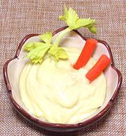

|
MayonnaiseWorldwide | ||||
| Makes: Effort: Sched: DoAhead: |
1 cup ** 30 min 2 days |
Home made Mayonnaise is superior to any commercial product, provided a high quality oil is used. This recipe presents the traditional method, but takes Raymond Sokolov's advice to use Dijon mustard for greater stability - see Comments. See also Note-3 on egg safety. | |||
|
|
1 1/4 1 1/2 1 tt |
t t T c |
Egg Yolk, large Salt Dijon Mustard Lemon Juice Oil (1) Pepper (white) |
Make: - (30 minutes (hand beaten - much faster by machine)) Caution: For one, or maybe even two recipes, don't use kitchen machinery, just a bowl and wire whip. The yolk sticks to the machine's container and the blades or beaters can't get to it, so there isn't enough for the oil and the sauce crashes.
|